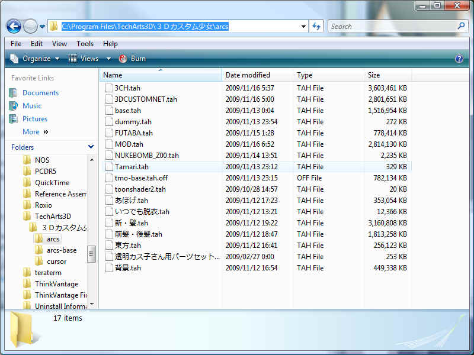
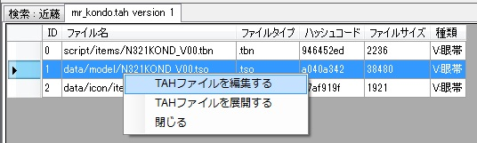

TDCGExplorerの画面は、下記のようなデザインになっています。
上記の赤で示された部分をマウスでクリックして動かすと、画面レイアウトを変更する事ができます。 ウインドウの位置、サイズ、レイアウトはSystem.dbに保存され、次回起動時にも同じ場所とレイアウトで表示されます。
重要な事があります。これらの各ツリーは始点となるディレクトリが違う事と関心の高いファイル別にツリーを分類しているだけで、実際にこのツリーでディレクトリやアーカイブを選択して、ファイル一覧でファイルを操作した時の動作は、全て共通です。例えば、セーブファイルツリーのセーブファイルをクリックした場合と、zipファイルの中にあるヘビーセーブをクリックした場合、動作は全く同じで利用できる機能も全く変わりありません。この操作性の直交性の高さがTDCGExplorerの中核となる機能ですが、最初はこのインターフェースに対して違和感を感じる方もいるかと思います。
ユーザーインターフェースの挙動はWindowsのそれより、Mac OS Xライクなユーザーインターフェースになっています。なので画面レイアウトやそのアクションはiTunesの操作性に非常に似ています。直感的にファイルを触って右ボタンでメニューを出して操作する。これが基本的な操作になります。いくつかのシステムコマンドはメニューバーにありますが、主な操作コマンドのほとんどは右ボタンメニューに配置されています。
<目次に戻る>TDCGExplorerで主に使われるであろうと思われる機能を中心に、TDCGExplorerの機能を紹介いたします。
TDCGExplorerを使いはじめる前に、事前に準備することがいくつかあります。まず、そのひとつが
unlha32.dllのインストールです。unlha32.dllは次のサイトからダウンロードできます。
http://www.madobe.net/archiver/index.html
ここでUNLHA32を探して、次のページを開きます。
ファイルを保存します。そして保存したファイルを実行してシステムにインストールします。これでTDCGExplorerを
実行するのに必要な環境の準備ができました。
TDCGExplorerの起動は、次のアイコンをダブルクリックします。
OSによって色々なサイズのアイコンになっているかもしれません。色数が違うかもしれませんが、このような
形をした実行ファイルのアイコンを起動することで次の画面が表示されます。
しばらくディスクにアクセスした後、本体プログラムが起動します。
次に初期設定を行います。データベースメニューの初期設定を選びます。
非常に多くの項目があって何を設定すればわからないかと思いますが、初期設定で設定を変更
しなければならない場所はそれほど多くはありません。初期設定の設定値のほとんどはユーザーが
動作をカスタマイズする為に用意されているからです。
初期設定で必ず設定しなければならないことは、
Arcsディレクトリ
base.tahファイルが格納されているディレクトリを指定します。

たとえば、C:\Program Files\TechArts3D\３Ｄカスタム少女に3Dカスタム少女がインストールされている場合、
Arcsディレクトリの指定はC:\Program Files\TechArts3D\３Ｄカスタム少女\arcsになります。
ZIPディレクトリは、modのzip,lzh,rarファイル、またはそれを展開したディレクトリを指定します。
この例では、デフォルト設定値のArchiveディレクトリの下にMODを格納している場合です。Archiveディレクトリの
下にさらにサブフォルダを作ってファイルを分類ても自動的に認識するので、
このようにサブディレクトリを作成してもかまいません。ZIPディレクトリは任意の場所を指定しているので、実際に
ファイルを格納しているディレクトリを指定してください。
これ以外の初期設定のチューニングについては後述します。
TDCGExplorerはデータベースで動作します。最初に一度、データベースを作成する必要があります。
データベースの作成はデータベースメニューのデータベースの構築・更新を実行します。
データベースの構築が始まると、いくらか時間がかかります。時々、ダイアログがポップアップして
作業の邪魔をするかもしれません。データベースの最初の構築の時には、しばらくPCを放置して誤ってlhaの
展開をキャンセルしたりしないように注意する必要があります。
TDCGExplorerの基本機能としてTAHファイルの中身を見ることができます。
Arcsというタグがついたツリーでディレクトリを選ぶと、その右にあるファイル一覧リストボックスに、
そのディレクトリにあるTAHファイルがリストアップされます。さらにリストボックスのTAHファイルを
クリックすると、そのTAHファイルを開いて中身が表示されます。
TSOファイルを選択すると、TSOの3D表示が表示されます。

アーカイブツリーを選択すると、初期設定で指定したZIPディレクトリ階層をツリー表示されます。
どのようなツリー階層で管理していても、ツリー表示に反映されます。
ZIPファイルを選択すると、そのZIPファイルを開きます。初期設定でZIPファイル選択時の動作を
指定しておくと自動的にテキストファイルや画像ファイルを開くことができます。
またZIPファイルの中のTAHファイルを選択すると、TAHファイルビューアが起動してZIPファイルの中の
TAHファイルの中身を確認することができます。
TAHファイルがインストールされているZIPだけを抜粋して、ツリー階層表示を行います。このツリー
表示の動作はZIPファイルビューアの動作とまったく同じですが、すでに3Dカスタム少女に組み込まれている
MODだけを表示します。
TAHファイルの中身は時として、衝突と呼ばれる現象や重複が発生します。この状態になると3Dカスタム少女上で
問題が発生してアイコンが見えなくなったり、違う場所に表示されたりすることがあります。そのような状態に
なっているtahファイルを表示します。
衝突の回避方法については後述の「TAH内部ファイル名のリネーム」をごらんになってください。
タグ分類表示は、3DCG MODS Referrence Serverで分類されたタグに基づいて、ZIPディレクトリで
指定されたMODを分類表示します。表示方法が異なるだけで、基本的な使い方はアーカイブツリーと
まったく同様です。

セーブファイルビューアでは、通常セーブファイル・ヘビーセーブファイル・ポーズファイル・シーンセーブファイルを
見ることができます。
どのディレクトリに入っていても、ファイルの種類に応じて適切なビューアが起動します。

セーブファイルを開いた場合、パーツをダブルクリックすると、そのパーツを使っているMODにジャンプして表示します。
ZIPファイルに入っている場合にはZIPファイルの中身も自動的に表示します。
TDCGExplorerは強力なTAHエディタを搭載しています。TAH編集モードを、各ビューアから起動すると次のような
画面が表示されます。
TAHエディタはデータを一旦データベースに保持します。
編集が終わった後は必ず必要なファイルを選択したファイルをTAHに梱包するコマンドで梱包してください。
そのまま閉じると編集はキャンセルされ、変更は失われます。
TAH編集モードに入ると自動的にTAH編集対象の構成要素が編集用データベースにコピーされます。
コピーされた後はオリジナルが書き換わっても消えても影響はありません。
TAHエディタ上で、TAH内部ファイルの名前を書き換えることができます。
この機能を使うことで、TAHファイル名の重複やハッシュ値の重複を回避することができます。
リネームしたい、アイコンPSDファイル、TSOファイル、TBNファイルをセットで選択します。
（この三つがセットになっていないと選ばれていないファイルは書き換えられません）。
新しい名前を入力します。名前は前方から書き換えられ、ファイル名の一部から全体までを
書き換えることができます。
書き換えを実行すると、新しい名前がつけられます。このとき、一緒に指定されていたTBN
ファイルの内部TSO名も自動的に新しい名前がつけられます。
アイテムの装着位置を変更したい場合に、ファイルのカテゴリ変更を使います。
カテゴリ変更の際も、アイコンPSDファイル、TSOファイル、TBNファイルをセットで選択します。
選択したファイルのカテゴリを変更するコマンドを実行すると次のダイアログが表示されます。
ここでTBNの属性を選択します。
属性を変更すると、新しいカテゴリ文字が割り当てられます。tbnファイルは新しいカテゴリの
ファイルに自動的に置き換えられます。
この機能は非常に強力なtbn作成機能を提供します。
tsoファイルを選択して、選択したtsoのtbnを生成するコマンドを実行すると、次の
ダイアログが表示されます。
tbnを作成したい属性にチェックボックスをいれてOKを押します。
指定された属性の新しいtbnファイルが作成されます。アイコンPSDファイルがあった場合には
それも自動的にコピーされます。
複数の小さなTAHファイルをひとつの大きなTAHファイルにまとめることができます。
これはArcsツリービューから操作します。
追加髪色・髪型のようなTAHファイルは1tsoにつき1tahと非常に細かくわかれています。これらの
TAHを集約するには、
集約したいディレクトリをArcsツリービューで選択します。このディレクトリより以下の階層にある
すべてのTAHファイルが集約の対象になります。
ディレクトリを選んだあと、選択されている階層以下のTAHをエディタで開くコマンドを
実行してください。

集約するTAH名とバージョンが聞かれるので、それを設定してください。
TAHファイルが読み込まれると、TAHエディタが起動します。この状態で、ファイルに保存するか
すべてのファイルを選択して、ファイルをTAHに梱包します。これで個別のTAHファイルが１個の
TAHファイルに集約されます。
TAHファイルの読み取りはバージョンをチェックして、新しいバージョンのファイルがあった場合には
古いバージョンのファイルを上書き読み取りします。これにより複数の同一名ファイルがあった
場合には最新バージョンに集約されます。
toonshader2、透明カス子セットは複数TAHを集約したTAHに含めないで下さい。
TDCGExplorerはTAHファイルの梱包・展開をサポートしています。
TAHファイルを展開する場合には、TAHファイルをドラッグドロップしてTDCGExplorerウインドウに
ドロップしてください。自動的にそのTAHファイルの中身を読み取って、TAHエディタ画面に表示します。
TAHファイルの展開は、TAHエディタモードで選択したファイルを保存するコマンドを実行すると、
TAH内部ファイルをディスクにファイルで書き出します。
TDCGExplorerはセーブファイル各種を操作する機能を搭載しています。

通常セーブファイルを選択すると、自動的に使用しているアイテムがデータベースから検索されます。
右ボタンメニューでヘビーセーブ形式で保存するコマンドを実行すると、自動的にデータベースから
関連アイテムを呼び出してヘビーセーブ形式ファイルを保存します。このとき、arcsディレクトリに
MODがインストールされていなくてもzipディレクトリからMODを検索してヘビーセーブファイルに
組み込みます。
7
通常セーブ・ヘビーセーブファイルをTAHファイルに変換することができます。セーブファイルを
ひらいてから、TAHファイルを作成するコマンドを実行します。
TAHファイル名を設定してOKを押すと、
セーブファイルから変換されたTAHファイルが作成されます。この後はTAHエディタの機能をつかって、
ファイル名をリネームしたり不要なアイテムを削除して必要な部分のTAHファイルを作成・梱包できます。
TDCGExplorerの応用について解説します。
TDCGExplorerで衝突を回避する手順を説明します。
① データベースを更新する
データベースメニューのデータベースの構築・更新を実行します。
② 衝突しているMODを確認する
衝突タブを開くと衝突しているMODが格納されているディレクトリツリーが表示されます。
③ 衝突しているTAHを確認する。
ツリーをたどっていくと、hyoutan.tahが衝突していることがわかります。
④ 衝突の詳細を確認する
hyoutan.tahをクリックすると何が衝突しているのか、詳細情報が表示されます。
⑤ 衝突しているTAHを編集する
衝突している項目の上で右ボタンメニューを出すと、TAHファイルを編集するコマンドが表示されます。
これを実行します。
⑥ TAHエディタで編集する
自動的に衝突しているTAHファイルをTAH編集モードでTAHエディタが起動されます。
ここでは、名前を書き換えて衝突を回避しています。
右ボタンメニューで選択したファイルの名前を変更するコマンドを実行します。
新しい名前を入力します。
名前が変更されました。
⑦ 変更したファイルをTAHに梱包する。
すべて選択コマンドを実行してTAHファイル全体を選択します。
選択したファイルをTAHに梱包するコマンドを実行します。
保存先の確認を求められるのでディレクトリを選んで保存を押します。

衝突回避版のTAHファイルが削除されました。オリジナルファイルをバックアップした後、
衝突回避版TAHファイルへファイルを置き換えると衝突が解消します。
作業用データベースは、現在開いているTAHエディタのタブを閉じると自動的に消去されます。
TDCGExplorerは複数のTAHファイルを集約した状態でも、管理できます。
① 集約元ディレクトリを作成する
3Dカスタム少女のARCSディレクトリとは別の場所に、MODを格納するディレクトリを作成します。
そのディレクトリには集約させたいMODをコピー（もしくは移動）します。本来のARCSディレクトリには
base.tah、base_xp*.tahだけを残しておきます。
集約元ディレクトリにもbase.tahが必要です。
② 初期設定を変更する
初期設定でARCSディレクトリを①で作成したディレクトリに設定します。
③ データベースを更新する
新しいディレクトリのためにデータベースを更新します。
④ TAHファイルを集約する。
ARCSツリーには、新しいディレクトリのツリーが表示されますので、
そこから集約していくディレクトリをひとつずつえらんで、
選択されいている階層以下のTAHをエディタで開くコマンドを実行します。
ファイル名とTAHバージョンの確認が求められます。通常は変更する必要はありません。
TAHファイル読み取りには若干の時間がかかります。
⑤ TAHファイルの編集とTAHへの梱包
読み取りが完了すると、TAHエディタに読み込まれたTAHが表示でます。
ここでディレクトリ欄が極端に長かったりした場合には、ゴミもいっしょに取り込んでしまった
可能性があります。そういったファイルは3Dカスタム少女が落ちる原因になるので、
TAHエディタ上で探して、
ゴミファイルを選択したファイルの削除コマンドで削除します。ゴミファイルがない、あっても動作に
支障がないのであれば編集操作は飛ばしてもかまいません。
全て選択コマンドを実行した後、選択したファイルをTAHに梱包するコマンドを実行します。
保存先を求められるので保存先を指定して保存ボタンを押します。
集約したTAHファイルができました。
この作業を全てのディレクトリに対して、集約後のTAHファイルが4GBに収まるように、
適宜ディレクトリを指定しながら全てのディレクトリに対して実行します。
⑥ ARCSディレクトリへの移動
⑤で作成したTAHファイルをARCSディレクトリに全て移動します。さらに、集約してはいけないファイル
(toonshader2や透明カス子)などもあわせて移動します。
この状態でカス子では集約したTAHファイルで起動し、TDCGExplorerでは集約前のディレクトリ状態で
TAHファイルを管理することができるようになります。
TDCGExplorerではMODの梱包を簡単に行えます。
① TSOファイルとPSDファイルを用意する
mqo2tsoやGIMPを使って、TSOファイルとPSDファイルを用意します。
tbnファイルはTDCGExplorerで作成できるので用意する必要はありません。
このように
TAH名
├ data/icon/items/
└ data/model/
というディレクトリを用意しておきます。
② ディレクトリをTDCGExplorerにドラッグドロップする。
TAH梱包元となるディレクトリ階層をWindowsエクスプローラーで開きます。
そして梱包したいディレクトリをTDCGExplorerにドロップします。
③ TBNを作成する
TBNファイルの作成はTAHエディタの機能を使って作成します。
まず、作成したいTBNが必要なTSOファイルを選びます。
TSOを選択した後、選択したtsoファイルのtbnを生成するコマンドを実行します。
作成したいtbn属性にチェックボックスをチェックしてOKを押します。
自動的にアイコンPSDファイルがコピーされ、チェックした属性のtbnファイルが作成されます。
④ TAHに梱包
全て選択コマンドを実行して、選択したファイルをTAHに梱包するコマンドを実行します。
保存先の確認を求められるので保存先を指定して保存を押します。
TAHに梱包が完了したので3Dカスタム少女のARCSディレクトリをTAHに移動して作業は完了です。
装着部位がほかのアイテムと干渉して同時装着できない場合がよくあります。
この場合はTDCGExplorerで装着部位を追加するTAHファイルを作成することで、
装着部位を追加することができます。
① 装着部位を増やしたいTAHをTAHエディタで開く。
たとえばこのアイテムは他の眼帯アイテムと同時に装着する事ができません。

このようなアイテムのTAHファイルを開いて確認して、TAHエディタで開きます。
② TBNの生成
装着位置を増やしたいアイテムのTSOファイルを選びます。
TSOファイルを選択したら、選択したtsoファイルのtbnを生成するコマンドを実行します。
③ 装着部位の追加
tbnファイルの生成ウインドウで、追加したい装着位置のチェックボックスのチェックをいれ、
OKボタンを押します。
追加した装着部位に相当するアイコンPSDファイルとtbnファイルが追加されます。
④ TAHに梱包
TAHに梱包する際には、追加されたtbnとpsdファイルだけを選択します。元々入っていた
PSD、TSO、TBNファイルは選択しないでください。
選択したファイルをTAHに梱包するコマンドを実行します。
オリジナルのtahファイル名がデフォルトで入っていますので、これを書き換えてオリジナルの
追加差分であるファイル名に変更して保存を押します。
装着部位を追加したTAHファイルができました。
このファイルをARCSディレクトリにいれると、新しい装着部位でアイテムが使える様になります。
TDCGExplorerのコマンドについて解説します。

3DCG MODS Referrenceサーバーに、このアーカイブに関連する情報を問い合わせます。

問い合わせると、インターネットにアクセスしてそのアーカイブに関連する情報を調べることが出来ます。
そのアーカイブを使用するのに必要なアーカイブファイルをアーカイブ展開フォルダに解凍します。
アーカイブ展開コマンドで展開したアーカイブを含むフォルダを開きます
色番号00番のtbnが無い為に使用不可能になっているtahファイルを検索します。検索結果がリストアップされます。ダブルクリックすると目的のファイルにジャンプできます。
tahファイル名やzipファイルの中の特定のファイルを検索します。検索結果がリストアップされます。ダブルクリックすると目的のファイルにジャンプできます。
アーカイブを検索する、にチェックを入れるとZIPディレクトリ内容も検索します。この場合検索に時間がかかります。
詳細検索に加えて、TAH内部のファイルを検索します。この処理は非常に時間がかかります。
アーカイブにコメントをつけることができます。次のダイアログが表示されます。

注訳を入力すると、以後からこのアーカイブの名前は抽訳で入力された内容で表示されます。
そのアーカイブを含むフォルダを開きます。
アプリケーションを終了します
<目次に戻る>アプリケーションが使うデータベースを操作するメニューコマンドです。
現在の初期設定にしたがって、データベースを構築したり、その後の変更に対する更新を取り込むことができます。最初の構築にはいくらか時間がかかります。更新は変更分のみの操作となるのですぐに終了します。
3DCG MODS Referrence Serverから各種情報を取得してデータベースに反映します。この情報は、データベースファイルとは別にキャッシュしますので、この操作を行うとデータベースの更新を行わなくても最新の情報で処理されます。
複数のTDCGExplorerを同時に起動してデータベース間の情報を交換したり、セーブファイルの情報を最新状態に更新した時に実行してください。表示が最新のデータベース情報で更新されます。
TDCGExplorerの初期設定情報を入力します。次のダイアログが表示されます。
初期設定は以下の項目を設定してください。なお、デフォルト値は3Dカスタム少女をデフォルトインストールした時の状態で自動設定されます。
tahファイルを格納している3Dカスタム少女のarcsディレクトリを指定してください。TDCGExplorerはこのディレクトリから情報を読み出して動作します。
3Dカスタム少女のセーブファイルが保存されるディレクトリを指定してください。なお、この設定値は通常変更する必要はありません。
ポーズファイルのデフォルト保存先を指定します（読み取りはTDCGディレクトリから読み取られます)。
アーカイブファイルのzipファイル等を格納しているディレクトリを指定します。TDCGExplorerはこのディレクトリからアーカイブ情報を読み取って、インストール状態やヘビーセーブデータの組み立てを行います。このディレクトリにあるzipファイルは展開済み状態であっても、zipやrar,lzhファイルのままでもいずれでも構いません。
アーカイブファイル展開先ディレクトリを指定してください。アーカイブファイルを展開した時には、このディレクトリにファイルを展開します。XPなどではarcsディレクトリのサブディレクトリ等を直接指定することもできます。
TAHファイルのデフォルト保存先とTAH編集キャッシュファイルの保存先を指定します。
3DCG MODS Referrence Serverのアドレスを指定します。通常変更の必要はありません。
3DCG MODS Referrence Serverのアドレスを指定します。通常変更の必要はありません。
3DCG MODS Referrence Serverのアドレスを指定します。通常変更の必要はありません。
アーカイブファイルをコード名として認識する正規表現を指定します。通常変更の必要はありません。
ディレクトリ名からアーカイブファイルを認識する為の正規表現を指定します。通常変更の必要はありません。
アーカイブツリー表示でアーカイブファイルを選択した時に行う動作を指定します。
arcsディレクトリとアーカイブディレクトリのいずれを優先して検索するか指定します。
キャッシュファイルの削除設定、TSO表示設定を行います。
TDCGExplorer起動時に3DCG MODS Rererrence Serverから最新情報を取得するか指定します。オフラインで使用する時はチェックボックスをはずしてください。
セーブファイルビューアの回転中心とカメラの初期位置を設定します。
タブ表示をインテリジェントモードと上書きモードのいずれかに設定します。
アーカイブファイルを展開した時、アーカイブファイルを含むフォルダを開くかどうか設定します。
tahファイル内部の衝突検出レベルを変更します。チェックボックスの組み合わせによって、衝突の検出レベルを変更する事ができます。

ビューワーをリセットしてカメラをホームポジションに戻します。TSOのレンダリングも停止します。
アニメーションtmoファイルを開いていた場合、そのアニメーション表示を開始します。
<目次に戻る>指定されたツリーノード以下全部を展開します。
新規に内容を表示する為のタブを作成します
現在選択されているタブを閉じます
<目次に戻る>
このマニュアルを表示します
アプリケーションとシステム、データベースのバージョンを表示します
<目次に戻る>
TAHファイル表示モードでは以下のコマンドが使えます。
TAHファイルをTAH編集モードで開きます。
現在表示しているタブを閉じます。
<目次に戻る>TAHファイルの管理は、基本的にArcsタブを使います。

Arcsと書かれたタブを選び、ディレクトリを選ぶと、

そのディレクトリにあるtahファイルがリストアップされます。
同様に、アーカイブタブではMODを格納しているzip等のファイル、インストール済みでは、インストールされているアーカイブ、衝突タブでは衝突しているtahファイル、タグでは3DCG MODS Referrenceに登録されているタグ、セーブファイルではセーブファイル・ポーズファイルが表示されます。これらの操作方法は共通になっています。
<目次に戻る>ツリーでディレクトリを選ぶと各種ファイルの一覧が出ます。
ここでファイルを選んで右ボタンを押してメニューを出すと、以下のコマンドが使えます。 またファイルを選ぶと自動的に関連するタブが開きます。
既存タブの内容を消去せずに、新しいタブに表示する為のタブを作成します。
現在選択されているTAHファイルを、TAH編集モードで開きます。
TAH編集ファイルをキャッシュする設定にしていた場合、キャッシュファイルが保存されます。 このキャッシュファイルを手動で削除する時に使用します。
TAHファイルの中身をTAH展開ディレクトリに中身のファイルを展開します。
<目次に戻る>ツリーでディレクトリを選んで、右ボタンを押してメニューを出すと、以下のコマンドが使えます。
現在選択しているディレクトリ以下を全て展開表示します。
アーカイブファイルを展開 現在選択されているアーカイブファイルをアーカイブ展開フォルダに解凍しますそのアーカイブを使用するのに必要なアーカイブファイルをアーカイブ展開フォルダに解凍します。
アーカイブにコメントをつけることができます。次のダイアログが表示されます。
3DCG MODS Referrenceサーバーに、このアーカイブに関連する情報を問い合わせます。
問い合わせると、インターネットにアクセスしてそのアーカイブに関連する情報を調べることが出来ます。
そのアーカイブを含むフォルダを開きます。
そのアーカイブを含むフォルダを開きます。
指定されたディレクトリ以下のTAHファイルを一つのTAHエディタ上に集約して開きます。複数のTAHファイルを一つのTAHファイルに統合して、編集・削除等を行ったうえで保存する事ができます。
<目次に戻る>
ファイル名をクリックすると、そのファイルに関連するアイコンを表示します。

tsoファイルを選択すると、そのtsoファイルのモデルを3D表示します。
<目次に戻る>TAH編集モードは非常に多くの機能を持っています。TAH編集モードに入ると、自動的にtahファイルを解凍してデータベースファイルを作成し、内部の個別ファイルを直接編集できる状態になります。

TAH編集モードを起動すると、上記のようにtahファイルが解凍された状態で表示されます。
<目次に戻る>
TAHファイルに含まれる全てのファイルを選択します。TAH全体を梱包する時は全て選択して下さい。編集した一部のファイルだけを保存する場合には、SHIFTキーやコントロールキーを押しながらマウスでファイルをクリックして一部のファイルを選択してください。
TAHバージョンとTAHファイル名を変更します。次のダイアログが表示されます。
このようなダイアログが開いて、TAHバージョンとTAHファイル名を設定できます。 ここで設定されたバージョンとファイル名でTAHは保存されます。
現在選択されているファイルをTAH編集ディレクトリに保存します。
指定されたTAH内部ファイル名を変更します。次のダイアログが表示されます。
TBNファイル名が指定されていた場合、内部で参照しているTSOファイル名も新しい名前に書き換えられます。ファイル名は前方部分の一部だけを書き換える子とができるので、属性を変更する事なく別の名前に内部ファイル名を付け替えることが出来ます。ファイルを選択する時は、TBN、TSO、PSDファイルの三つをまとめて指定してください。指定されてなかった時には、TBNに対するPSDやTSOファイルの関連性が損なわれることがあります。
ファイルの属性を変更する事ができます。次のダイアログが表示されます。
指定されたファイルの属性文字と、TBNファイルが指定されていた場合にはTBNのファイル内容を書き換えます。別の部位にアイテムを移動するときにはカテゴリを変更する事で3Dカスタム少女上の表示位置を変更する事ができます。ファイルを選択する時は、TBN、TSO、PSDファイルの三つをまとめて指定してください。指定されてなかった時には、TBNに対するPSDやTSOファイルの関連性が損なわれることがあります。
指定したアイテムの色番号を変更します。次のダイアログが表示されます。

ここでは00からZZまでの任意の英数字２桁を入力してください。入力すると、色番号を変更し、TBNファイルが含まれている場合にはTBNファイル内部の色番号を変更します。ファイルを選択する時は、TBN、TSO、PSDファイルの三つをまとめて指定してください。指定されてなかった時には、TBNに対するPSDやTSOファイルの関連性が損なわれることがあります。
TAH編集データベースからファイルを削除します。不要なパーツを取り除きたい時に使用してください。
TAHファイルを作成します。次のダイアログが表示されます。
保存先を指定してTAHファイルを保存してください。デフォルトではTAH編集ディレクトリが指定されています。それ以外のディレクトリに保存することもできます。
TBNファイルをTSOファイルから作成します。次のダイアログが表示されます。

属性ごとにチェックボックスがあるので、TBNファイルを作成したい属性をチェックしてください。既に指定された属性のTBNファイルがあった場合には、そのチェック指定は無視されます(新たに作り直したいときには前述の選択したファイルの削除コマンドを使ってください)。TBNが生成されるとき、そのTSOと同じ名前を持つアイコンPSDファイルがあった場合には自動的にコピーされます。TSOファイルとPSDファイルを用意すれば、TBNファイル作成はこのコマンドで全て行えます。
TBN作成コマンドはカテゴリ変更コマンドと似ていますが、TBNファイル作成コマンドではTSOのファイル名は元のファイル名をそのまま使用します。したがって１個のTSOファイルに対して複数のTBNファイルとアイコンファイルを作る事ができます。なお、TBNの作成コマンドを使って作成したTBNファイルの名前を書き換えたり、属性を変更するとTBNとTSOの関係が失われてしまうことがあります。TBN作成コマンドを実行する時は、あらかじめファイル名・属性・色番号を指定してから行ってください。
現在開いているTAH編集タブを閉じます。初期設定で指定してあった場合には、自動的にTAH編集キャッシュファイルも削除します。複数のTAHファイルを編集しようとした時、既にTAH編集ファイルがあるというエラーが出た場合には、名前が重複しているTAH編集モードのタブを閉じてください。
<目次に戻る>
TAHファイル内でハッシュコードやファイル名が衝突すると、衝突ツリーにファイルが現れます。ここでディレクトリを選んで、tahファイルをファイルリストボックスで選択すると、衝突の詳細情報が表示されます。
衝突しているTAHファイルを編集モードで開きます。
表示している衝突表示タブを閉じます。
<目次に戻る>セーブファイルツリーでディレクトリを選択すると、セーブファイルの一覧が表示されます。これは他のツリーモードとは異なる右コマンドメニューが表示されます。
既に表示しているタブを閉じないで新しく表示する為のタブを作成します。
ファイル名を変更します。
ファイルの作成・更新・アクセス日時を書き換えます。3Dカスタム少女上での表示順序が入れ替えることができます。
現在ファイルリストに出ている全てのファイル日時を一括して書き換えます。3Dカスタム少女上では、ファイルの日時ではなくファイルの名前順序で表示されます。
<目次に戻る>セーブファイルを選択すると、セーブファイル情報が表示されます。

セーブファイル表示タブでは次の右コマンドメニューが使えます。
次のダイアログが表示されます。TAHファイルにつける名前を入力してください。

セーブデータ・ヘビーセーブデータからTAHファイルを作成します。TAHファイル構成要素が自動的に作成されて、TAH編集モードのタブが新規に表示されます。
次のダイアログが表示されます。セーブファイルの保存先を指定してください。

セーブデータ、ヘビーセーブデータを作成します。この機能を使う事により、arcsにアーカイブをインストールせずに直接アイテムを装備したセーブデータを作成することができます。仕様により通常セーブデータから作成したセーブデータの背景は白になります。
セーブファイルを3D表示します。セーブファイルをダブルクリックしても表示されます。
セーブデータ表示タブを閉じます
各項目をダブルクリックすると、そのパーツを格納しているtahファイル・zipファイルにジャンプします。
<目次に戻る>ポーズファイルを選択すると、ポーズファイルに関する情報が表示されます。
ポーズファイル情報タブでは次の右コマンドメニューが使えます。
サムネイル付ポーズファイルを作成します。次のダイアログが表示されます。

ポーズファイル保存先を入力してください。ポーズファイルのサムネイルを作成すると、ポーズファイルには以下のようにサムネイル表示がTSOビュー表示部分の内容で書き換えられます。
保存する前はこのように表示されます。


このサムネイル画像は3Dカスタム少女上でも表示されます。
ポーズファイル中の指定されたtmoファイルを保存します。次のダイアログが表示されます。
tmoファイル保存先を指定して保存してください。
ポーズファイル中のtsoデータからtahファイルを作成します。次のダイアログが表示されます。
tahの保存ファイル名を入力してください。tah編集モードタブが新規に開きます。
ポーズファイルを3D表示します。セーブファイルをダブルクリックしても表示されます。
ポーズファイル情報タブを閉じます
<目次に戻る>他カテゴリに紛れ込んだり、表示されない前提TAHがないtbnファイルを救済するtahファイルを作成します。このコマンドは前提TAH検索タブで使えます。
その表示タブを閉じます。全てのタブで使えます。
その他、タブ固有のWindowsコモンコントロールメニュー(カットアンドペースト等)が使えます。
<目次に戻る>セーブファイル・tah展開ディレクトリ・tahファイルをTDCGExplorerアプリケーションウインドウにドロップすると、そのファイルを表示したり編集することができます。tahファイルの場合は編集モードで、それ以外のファイルは表示モードで開きます。